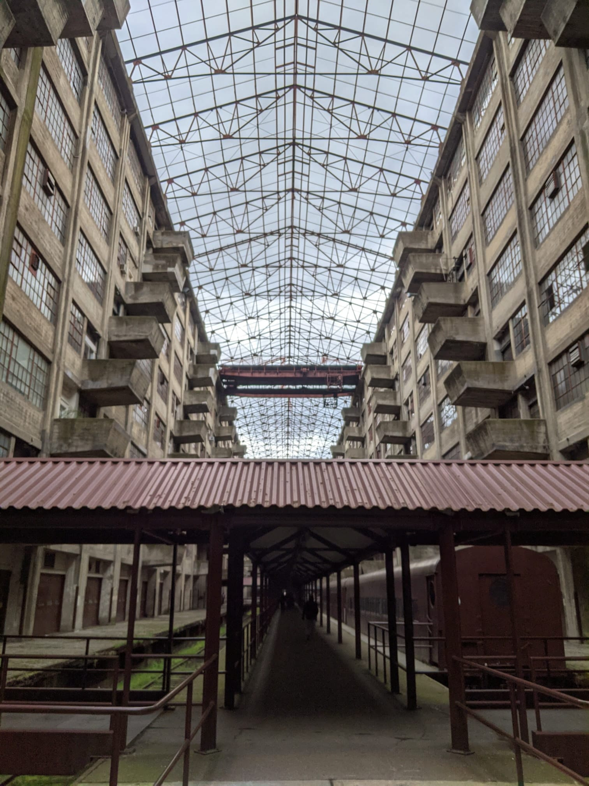
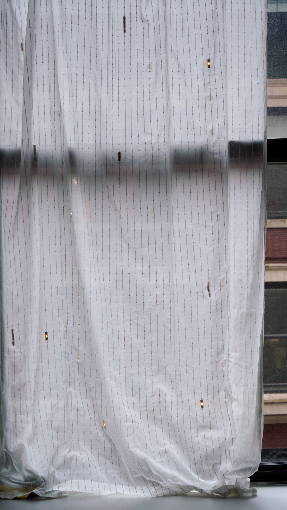
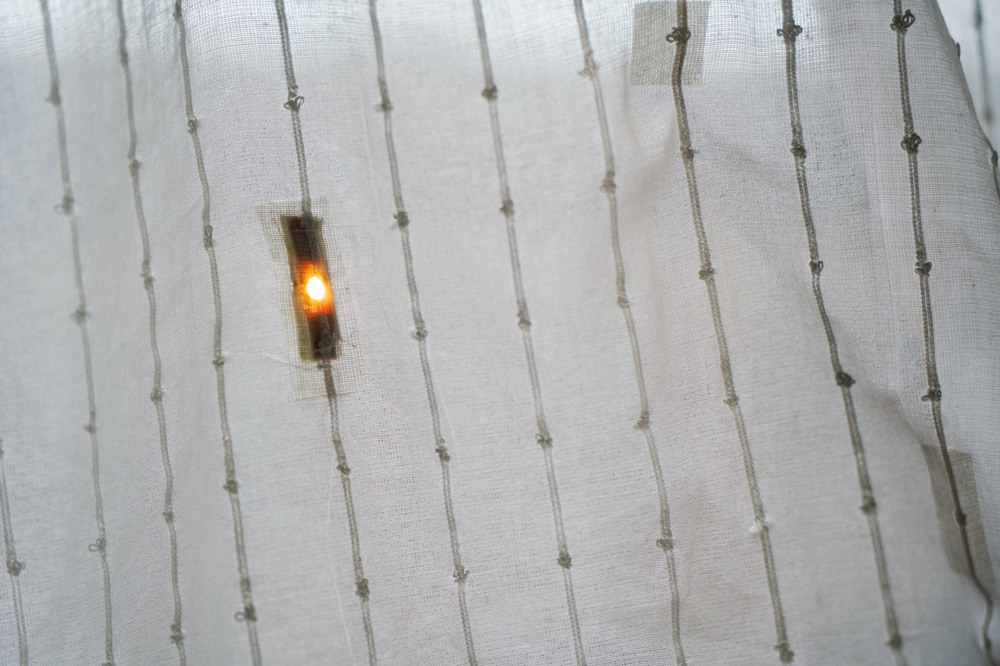
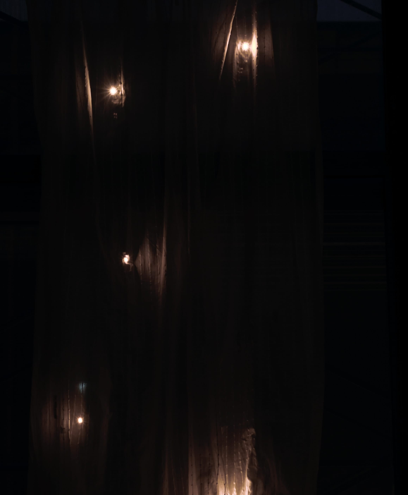

← Computational Craft | Salil Parekh
Do Curtains Dream at Night? + Teensy Soft Breakout Board
For my final, I had a few ideas, but I simply couldn't decide what to to make. I boiled it down to two ideas, one of them:

and the other, an idea that came up in a discussion with Liza, a soft breakout board for the Teensy.
Since I couldn't decide, I made both.
Teensy LC Soft Breakout Board
I first started work on making a soft breakout board for the Teensy LC. The Teensy LC is one of my favourite micro-controllers, given it's capabilities, size, and price. However, a headerless Teensy is difficult to work with as crocodile clips are far too big to connect to the pins, which makes it a pain to debug with. Once alternative is to solder headers to the board, or buy a Teensy with headers–but it's not still not easy to work with. The second issue with Teensy is, that to use it in production for a project, wires or conductive thread need to be soldered to the pins, which makes it difficult to reuse for another project later.
So what's the solution? A Soft Breakout Board. This should allow for easy access to the pins so that prototyping and debugging can be a far simpler and easier process, as well as allowing for it to be used for production and later reused.
Chapter 1: Breakout Board Design
I started sketching out different ideas for the breakout board, and printed 1:1 mockup on copier sheet to understand how they felt in my hand, and just how much functionality I could cram into it.
 Sketches and Paper Prototypes
Sketches and Paper Prototypes
As I iterated on the design of the breakout board, I realised that I could take many different approaches. A breakout board can take many forms with varying functionality–what I did I want from this breakout board? Is the micro-controller a removeable component that can be slotted in or out? Does the board need to showcase information about the pins so the user doesn't have to refer to the pinout guide? Is is just to be used for prototying and debugging?
I narrowed down on characteristics I needed for this project, and set a few targets the breakout board would need to meet.
- The Teensy can stay attached permanently to the breakout board
- It would need to facilitate easy prototyping, so would need to be easily accessible with crocodile clips
- Needs to also be used for production, so should allow components to be soldered to it
- Minimal information required, as I would be referring to the pinout guide provided with the Teensy for more information
- Needs to 'feel' nice to use, be dependable and reasonably rugged
- Built out of scraps or found material
The last two target weren't functional attributes, but I wanted to force myself to explore different materials and find ways to use materials affordances to influence the end product. After a few iterations, I settled on a simple design, with an emphasis on materials.
The primary layer would be made of a thick material with the Teensy either mounted on it, or within it via a cut out segment. The pins would be conductive pins or patches directly mounted on the primary layer. These would be connected to the pins on the Teensy via thin, enamel coated magnet wire below the main layer. The Teensy is offset to the side in order to make space for a LiPo battery and a JST connector. The final design and size of the board would be finalised after the materials were chosen, but I had a rough plan in place.
Chapter 2: Material Exploration
I went looking for materials in the one place I knew I'd find plenty of: FabScrap. I visited the place before I wrote the proposals for the final, and it perhaps wasn't the most productive use of time. FabScrap offers so much to choose from, and going in there without any restrictions only made the experience more confusing.
 Brooklyn Army Terminal, where FabScrap is located
On my previous visit, I picked up some pieces of polyurethane material, leather, and wool samples and some sheer lace material with the curtain in mind. The PU, leather and wool were chosen for their thickness and rigidity. I laser cut some of these materials to see how they would feel, and although they felt okay, the smell was absolutely vile. The burnt leather and wool smell was a very real problem, and I realised I'd need to switch to something cotton based in order to laser cut it successfully without having to worry about other sensory issues.
 Laser cut wool design (smells of burnt hair)
Laser cut wool design (smells of burnt hair)
 Laser cut PU/Leather (smells even worse)
Laser cut PU/Leather (smells even worse)
For the next visit to FabScrap, I had an agenda, and a laundry list of materials to shop for. I picked up some denim scraps (making sure they were mostly cotton), leather (in case I had to cut the piece manually), and a whole bunch of conductive clasps, snaps and other trinkets. The conductivity was tested using a multimeter. I got more than I needed in case of some issues, and in retrospect, I'm very glad that I did.
 Selected materials from the FabScrap haul
Selected materials from the FabScrap haul
Chapter 3: Assembly
Here's a link to a detailed tutorial of how I put the piece together, and I'll explain some of the more interesting observations, mistakes and other thoughts here.
 I loved these golden coloured clasps–they not only looked incredible, but they were conductive as well. Combined with a nappa leather base, it would create a wonderful, luxurious breakout board. I didn't have enough to create a breakout for a Teensy, but I simply couldn't find it anywhere! I need to continue hunting for these
I loved these golden coloured clasps–they not only looked incredible, but they were conductive as well. Combined with a nappa leather base, it would create a wonderful, luxurious breakout board. I didn't have enough to create a breakout for a Teensy, but I simply couldn't find it anywhere! I need to continue hunting for these
 I found a LOT of these at FabScrap, and initially I didn't want to use these. They didn't look that great and in the end I was forced to use these as I couldn't find any other viable alternatives on time. However, on denim they looked fantastic. They ring shape allowed crocodile clips to easily cling onto them and the copper tape nicely fastens on.
I found a LOT of these at FabScrap, and initially I didn't want to use these. They didn't look that great and in the end I was forced to use these as I couldn't find any other viable alternatives on time. However, on denim they looked fantastic. They ring shape allowed crocodile clips to easily cling onto them and the copper tape nicely fastens on.
 These smaller snaps were also an option, and these would've allowed me to shrink the breakout by a fair amount, but I stuck to the larger snaps as they offered a larger surface area to play with. The next iterations of the breakout will definitely need to be smalller.
These smaller snaps were also an option, and these would've allowed me to shrink the breakout by a fair amount, but I stuck to the larger snaps as they offered a larger surface area to play with. The next iterations of the breakout will definitely need to be smalller.
 In my hunt for conductive patches, I visited all the shops that were open on a washed out Sunday. In my travels I found these little things which were conductive, and looked like metal from ~insert shop name~. However, when I tried to solder onto them, the soldering iron went through them like–well like a hot solder through plastic. I was monumentally scammed there.
In my hunt for conductive patches, I visited all the shops that were open on a washed out Sunday. In my travels I found these little things which were conductive, and looked like metal from ~insert shop name~. However, when I tried to solder onto them, the soldering iron went through them like–well like a hot solder through plastic. I was monumentally scammed there.
 The magnet wire was a critical component of the build. The insulated coating allowed me to take shrink the breakout board dramatically as wires could freely intersect without the risk of them shorting. However, these wires were a little frail. They would surprisingly snap off in otherwise stable situations. I had to resolder and reconnect 5-6 pins, which was frustrating.
The magnet wire was a critical component of the build. The insulated coating allowed me to take shrink the breakout board dramatically as wires could freely intersect without the risk of them shorting. However, these wires were a little frail. They would surprisingly snap off in otherwise stable situations. I had to resolder and reconnect 5-6 pins, which was frustrating.
 The first proper test of the breakout board after assembly was a nerve-wracking moment, I'll admit. Luckily, on the first fire up, everything seemed to work just as planned, which is truly bizarre. It was also surprising to feel how easy it was to connect a circuit to the breakout board. Validation!
The first proper test of the breakout board after assembly was a nerve-wracking moment, I'll admit. Luckily, on the first fire up, everything seemed to work just as planned, which is truly bizarre. It was also surprising to feel how easy it was to connect a circuit to the breakout board. Validation!
This project was very much material led, and I'm happy that it was about almost completely made using scrap material. The only non-scrap components were the magnet wire and the glass tape used to the cover the wiring at the bottom. I was apprehensive about leaving so much to chance by way of letting scrap material dictate the design, but it worked out. Having access to a resource like FabScrap is a game changer. The use of a laser cutter is a crutch I need to get rid of. It's fantastic to achieve those incredibly clean cuts but it does limit the kinds of materials I can use. If did want to use leather, how would I achieve a similar level of finish? I'd love to make another variation of this, perhaps a smaller version or a luxurious version. Or perhaps I should let the materials I find guide me.
Do Curtains Dream at Night?
I've always wondered what a life of a curtain is like. Looking out of the window all day and night, what do they think about? This is why I decided to work on this project to build a curtain that could express its thoughts. What do curtains dream of at night?
This project seemed simple at first–I thought it was too easy–but it didn't take me too long to regret those thoughts. There were two large parts to the project: 1) Give the curtain a vision, or a way to sense things and 2) A way for the curtain to express its dreams.
To enable the curtain to "see", I would give it a grid of photoresistors, akin to an extremely low resolution camera about 3x3 pixels. This would "see" things outside the window, and keep a record. At night, the LEDs scattered across the curtains would switch on, and replay the record of what it saw during the day, with a few hallucinatory tweaks.
I did some research on electroluminescent lights, the tech that powers the backlight on some Casio digital watches. But I couldn't find the right resources for this, and the setup seemed far too complicated and expensive as it requires phosphor and high voltage current. I do wonder how they fit this lighting system in a tiny Casio watch with a battery life of 5 years or so.
 It's hard to explain the quality of the lighting, but it looks fantastic on video. Casio F105W
It's hard to explain the quality of the lighting, but it looks fantastic on video. Casio F105W
In order to make it easier to sew in the LEDs and the photoresistors, I created a set of muslin patches, on which I would solder the components onto.
 Laser cut and etched muslin patch for photoresistor
Laser cut and etched muslin patch for photoresistor
 Copper tape applied on patches
Copper tape applied on patches
 Components soldered onto patches
Components soldered onto patches
 LED patches
LED patches
I would use the thin, enamel coated 34 AWG Magnet Wire to connect these patches to the Teensy on the soft breakout board. This wire would allow to run the positive and negative wires along a single channel, instead of having to sew separate lines and risk having them touch and short when the curtain would move. I tried to sew the thread in the curtain, using a running stitch, but the wire has very little to no texture so it didn't 'stick' to the fabric and moved too much. In the end, I simply used masking tape as guide points for the wires.
The Big Regret Part 1
As I sat with the curtain, my pre-soldered patches, a bobbin of string and the magent wire, I quickly realised just how daunting the task really was. Scale is something I missed taking into account. Scale sapped away so much time, and any small mistakes I made were further amplified by the time it took to fix them, simply because it required so much more time to do things. Just wiring up the LEDs took close 6+ hours or so. Debugging those LEDs took another 2-3 hours.
Testing on a smaller scale didn't do much to demystify the unknowns or to combat the scale issue. Next time, I need to incorporate the complexities of working at scale when I design.
But everything worked! It took far, far longer than anticipated, but the curtain worked and it looked great at night.
The Big Regret Part 2
The enamel coated wire is an incredible tool, and it was the driving mechanic for both the curtain and the soft breakout board. However, it was also far more difficult to work with. Stripping the wire without snapping it was a delicate process, and there were instances where manufacturing defects meant there were some pre-stripped patches which caused 'ghost' shorting issues which were tricky to diagnose. I had to replace entire wiring looms to fix the issue. The lack of grip on the surface meant it was impossible to sew with.
I wonder if there's another material with similar properties, or a method to insulate copper thread/Karl-Grimm thread.
Final Assembly
The curtain definitely did not end up as I imagined it would, but it looks fantastic at night, even if it looks janky in the day.
 The patches are fairly visible in the day against the backlight
 Close up of the LED patches
 Magnet wire coming in clutch, as it can be easily corralled into wiring harnesses
Magnet wire coming in clutch, as it can be easily corralled into wiring harnesses
 Soft breakout board nestled in the curtain
Soft breakout board nestled in the curtain

 Curtains shining away at night
Curtains shining away at night
Previous post: Week 14 | Final Proposal
Next post: Teensy LC Soft Breakout Board (Tutorial)